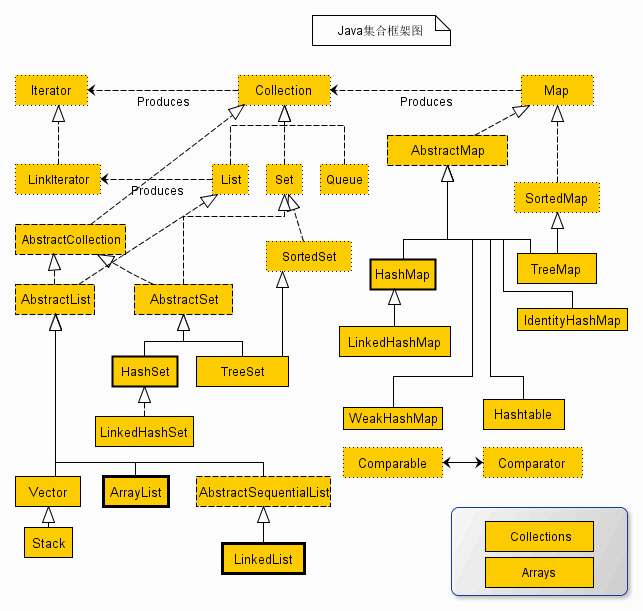

<!DOCTYPE html>
<html lang="en">

<head>

    <meta charset="utf-8">
    <meta name="viewport" content="width=device-width, initial-scale=1, shrink-to-fit=no">
    <meta name="description" content="">
    <meta name="author" content="">

    <title>Ting Blog</title>

    <!-- Bootstrap core CSS -->
    <link href="../css/bootstrap.min.css" rel="stylesheet">
    <!-- Custom styles for this template -->
    <link href="../css/clean-blog.css" rel="stylesheet">
    <link href="../css/style.css" rel="stylesheet">
    <!-- Temporary navbar container fix -->
    <style>
    .navbar-toggler {
        z-index: 1;
    }
    
    @media (max-width: 576px) {
        nav > .container {
            width: 100%;
        }
    }
    </style>

</head>

<body>

    <!-- Navigation -->
    <nav class="navbar fixed-top navbar-toggleable-md navbar-light" id="mainNav">
        <div class="container">
            <button class="navbar-toggler navbar-toggler-right" type="button" data-toggle="collapse" data-target="#navbarResponsive" aria-controls="navbarResponsive" aria-expanded="false" aria-label="Toggle navigation">
                Menu <i class="fa fa-bars"></i>
            </button>
            <div class="collapse navbar-collapse" id="navbarResponsive">
                <ul class="navbar-nav ml-auto">
                    <li class="nav-item">
                        <a class="nav-link" href="../index.html">首页</a>
                    </li>
                    <li class="nav-item">
                        <a class="nav-link" href="../post.html">文章</a>
                    </li>
                </ul>
            </div>
        </div>
    </nav>

    <!-- Page Header -->
    <header class="masthead" style="background-image: url('../img/post-bg.jpg')">
        <div class="container">
            <div class="row">
                <div class="col-lg-8 offset-lg-2 col-md-10 offset-md-1">
                    <div class="post-heading">
                        <h3>Java集合类--Collection与Map接口源码分析</h3>
                        <!-- <h2 class="subheading">Problems look mighty small from 150 miles up</h2> -->
                        <!-- <span class="meta">Posted by <a href="#">Start Bootstrap</a> on August 24, 2017</span> -->
                    </div>
                </div>
            </div>
        </div>
    </header>

    <!-- Post Content -->
    <article>
        <div class="container">
            <div class="row">
                <div class="col-lg-8 offset-lg-2 col-md-10 offset-md-1"><div id="md-preview">

<p>Java集合类是Java语言中非常重要的类，封装了常用的数据结构和算法。虽然每天都在大量的使用这些集合类，但是没有对其实现原理进行仔细的分析过，为了更好的使用Java集合类，特地认真的分析一下其实现代码。 <br>
 <br>
如果所示，是Java集合类的整体框架，从图上可以看出，Java集合类可以划分为3种： <br>
1）普通的无序类Set； <br>
2）偏序类List； <br>
3）有序对集合Map； <br>
其中Set和List都继承自Collection接口，Map没有从Collection继承；Map不是一个普通意义的集合，它的元素是一个Key-value对，而Collection也不是一个Map，它没有key的概念，Map和Collection彼此之间没有明确的继承关系。</p>

<h5>Collection接口</h5>

<p>Collection接口是集合重要的基础接口，一个Collection呈现了一组Objects，有些集合允许重复的元素(List, Queue)，有些不允许(Set)。一些要求顺序排列，一些不要求。 <br>
JDK中没有该接口的直接实现，JDK提供了具有一些特殊特性的接口如List、Set的实现。 <br>
使用或者实现Collection接口，都要提供两个构造方法： <br>
1）void constructor 提供一个空集合 <br>
2）一个Collection作为参数的constructor，可以进行集合的复制； <br>
List、Set、Queue都会继承该接口，其定义了集合的基本行为。该接口还继承了迭代器接口Iterator，因此继承自Collection的子类都要实现迭代器Iterator的两个方法</p>

<pre>public interface Iterator<e> {
     // 获取迭代器的下一个值
     E next(); 
     // 删除迭代器返回的最后一个值，
     // <b>该方法只有当next()方法被调用后才能使用；</b>
     void remove();
}
</e></pre>

<p>那Collection接口又定义了哪些通用的方法呢：</p>

<pre>public interface Collection<e> extends Iterable<e> {
    //返回集合中的元素数
    //<b>如果集合中的数目大于Integer.MAX_VALUE，MAME返回Integer.MAX_VALUE</b>
    int size();

    //如果集合中没有任何元素，返回空；
    boolean isEmpty();

    //如果集合包含元素o，则返回true;
    //是否包含元素o，判断的依据是，集合中存在一个元素e，满足 o==null? e==null:o.equals(e)
    boolean contains(Object  o);

    //返回包含整个集合元素的迭代器iterator
    Iterator<e> iterator();

    //返回包含所有集合元素的数组，其中元素的排列顺序与其iterator()返回的迭代器顺序一致，
    //该方法返回的是一个新的数组集合，与原来的集合无引用关系，调用者可放心修改；
    Object[] toArray();

    //返回集合重所有的元素组成的数组，数组的类型是函数中指定的类型。
    //如果集合类型与返回类型相同，那么直接将集合中的元素复制到指定的数组中；
    //如果集合元素类型与返回类型不相同，那么返回一个新的申请的数组，数组长度与集合长度一致；
    <t> T[] toArray(T[] a);

    //添加一个元素到数组中
    //<b>对于超限扩容和添加类型限制，各个具体实现的类各有差别</b>
    boolean add(E e);

    //移除元素o
    //如果数组中有元素e满足：(o==null，get(i)==null， o.equals(get(i)))，那么删除元素e并返回true
    boolean remove(Object o);

    //如果集合中含有指定集合c中所有元素，返回true
    boolean containsAll(Collection<!--?--> c);

    //将指定集合c的所有元素添加到集合的后面，返回的集合中元素的顺序与指定集合中元素的顺序一致；
    // 如果在添加过程中，指定集合c的元素发生改变，这种行为未定义；
    boolean addAll(Collection<!--? extends E--> c);

    //将指定集合c添加到当前集合的指定位置；当前集合会将指定位置的元素及其后面的元素进行平移，
    //指定集合的元素在当前集合中的位置为指定的位置index
    //如果在添加过程中，指定集合c的元素发生改变，这种行为未定义；
    boolean addAll(int index, Collection<!--? extends E--> c);

    //从当前集合中删除指定的集合c的元素，如果操作完成后，当前集合发生变化，则返回true；
    boolean removeAll(Collection<!--?--> c);

    //返回当前集合与指定集合c的并集，如果操作完成后，当前集合发生变化，则返回true；
    boolean retainAll(Collection<!--?--> c);

    //清除当前集合中的所有元素
    void clear();

    //对象o与当前集合对比
    boolean equals(Object o);

    //返回当前集合的hash code
    int hashCode();

    //since java 1.8
    @Override
    default Spliterator<e> spliterator() {
        return Spliterators.spliterator(this, 0);
    }

    //since java 1.8
    default Stream<e> stream() {
        return StreamSupport.stream(spliterator(), false);
    }

    // since java 1.8
    default Stream<e> parallelStream() {
        return StreamSupport.stream(spliterator(), true);
    }
</e></e></e></t></e></e></e></pre>

<p>继承Collection的接口的类和接口有： <br>
 *     Set <br>
 *     List <br>
 *     Map <br>
 *     SortedSet <br>
 *     SortedMap <br>
 *     HashSet <br>
 *     TreeSet <br>
 *     ArrayList <br>
 *     LinkedList <br>
 *     Vector <br>
 *     Collections <br>
 *     Arrays <br>
 *     AbstractCollection</p>

<h5>Map接口</h5>

<p>Map是一个包含键值对及其对应关系的对象，一个对象中不会出现重复的Key值，每一个Key值可以映射至少一个值； <br>
一个Map可以提供三种视图关系，一个Keys的Set，一个Values的Collection，和一个key-value映射的Set; <br>
Map的次序指的是其包含所有元素的迭代器Iterator提供的Map的集合视图。需要注意的是，应当避免使用value值可变的对象作为key值，一个特殊的应用是当前Map作为当前Map的key值，这是不允许的，但是当前Map可以作为当前Map的一个Value值， <br>
下面看一下接口Map提供的基础方法：</p>

<pre>//返回Map的key-value对的数量，最大数为Integer.MAX_VALUE;
int size();

//不含任何键值对返回true
boolean isEmpty();

//如果Map中含有指定Key的映射关系，返回true
//有k满足key == null ? k == null : key.equals(k)
boolean containsKey(Object key);

//如果Map中有一个或者多个key可以映射到值value，则返回true
boolean containsValue(Object value);

//返回Map中key映射的value值，若无value返回null
V get(Object key);

//在Map中关联key和value的映射关系。如果Map中已经存在key的映射关系，那么旧值会被新值value取代，返回旧值或者null
V put(K key, V value);

//删除Map中key的映射关系。返回key对应的值或者null
V remove(Object key);

//复制指定Map m中的键值对到Map中
void putAll(Map<!--? extends K, ? extends V--> m);

//删除Map中所有的键值关系
void clear();

//返回Map的键集合
Set<k> keySet();

//返回Map的值集合
Collection<v> values();

//返回Map中的所有的键值关系
//是Map中一个键值关系的展示，Map中包含Set，修改map也会影响到Set，反之亦然。它支持删除操作，但不支持添加操作；
Set<map.entry<k, v="">&gt; entrySet();

//Map.Entry定义
//是一个键值对，Map.entrySet()方法返回一个Map的集合视图，其中所有的元素都是该类型。要获取键值映射，唯一的方法是通过Map.entrySet()的迭代器。
interface Entry<k,v> {

 //当前键值关系中的键
 K getKey();

 //当前键值关系中的value值
 V getValue();

 //替换当前键值关系中的value值
 V setValue(V value);

 //当以下条件返回true:
 /*     (e1.getKey()==null ?
  *      e2.getKey()==null : e1.getKey().equals(e2.getKey()))  &amp;&amp;
  *     (e1.getValue()==null ?
  *      e2.getValue()==null : e1.getValue().equals(e2.getValue()))
  */
 boolean equals(Object o);

 //返回code值
 //获取方法：
 /* (e.getKey()==null   ? 0 : e.getKey().hashCode()) ^
  * (e.getValue()==null ? 0 : e.getValue().hashCode())
  */
 int hashCode();

 //since 1.8
 //比较key值排序
 public static <k extends="" comparable<?="" super="" k="">, V&gt; Comparator<map.entry<k,v>&gt; comparingByKey() {
            return (Comparator<map.entry<k, v="">&gt; &amp; Serializable)
                (c1, c2) -&gt; c1.getKey().compareTo(c2.getKey());
        }

 //since 1.8
 //比较value值排序
 public static <k, v="" extends="" comparable<?="" super="">&gt; Comparator<map.entry<k,v>&gt; comparingByValue() {
            return (Comparator<map.entry<k, v="">&gt; &amp; Serializable)
                (c1, c2) -&gt; c1.getValue().compareTo(c2.getValue());
        }

 //since 1.8
 //使用指定比较对象进行key值比较排序
 public static <k, v=""> Comparator<map.entry<k, v="">&gt; comparingByKey(Comparator<!--? super K--> cmp) {
            Objects.requireNonNull(cmp);
            return (Comparator<map.entry<k, v="">&gt; &amp; Serializable)
                (c1, c2) -&gt; cmp.compare(c1.getKey(), c2.getKey());
        }

 //since 1.8
 //使用指定比较对象进行value值比较排序
 public static <k, v=""> Comparator<map.entry<k, v="">&gt; comparingByValue(Comparator<!--? super V--> cmp) {
            Objects.requireNonNull(cmp);
            return (Comparator<map.entry<k, v="">&gt; &amp; Serializable)
                (c1, c2) -&gt; cmp.compare(c1.getValue(), c2.getValue());
        }
}

//比较两个Map是否相等
//o是一个map，并且映射关系相等，即m1.entrySet().equals(m2.entrySet())
boolean equals(Object o);

//hash code
//是map的entrySet的hash code之和
int hashCode();

//since 1.8
//返回map中key的映射值，若值不存在，返回defaultValue
default V getOrDefault(Object key, V defaultValue) {
        V v;
        return (((v = get(key)) != null) || containsKey(key))
            ? v
            : defaultValue;
    }
</map.entry<k,></map.entry<k,></k,></map.entry<k,></map.entry<k,></k,></map.entry<k,></map.entry<k,v></k,></map.entry<k,></map.entry<k,v></k></k,v></map.entry<k,></v></k>

<p>//since 1.8 <br>
//对map中所有的映射关系实体entry进行指定的操作 <br>
default void forEach(BiConsumer<!--? super K, ? super V--> action) { <br>
        Objects.requireNonNull(action); <br>
        for (Map.Entry<k, v=""> entry : entrySet()) { <br>
            K k; <br>
            V v; <br>
            try { <br>
                k = entry.getKey(); <br>
                v = entry.getValue(); <br>
            } catch(IllegalStateException ise) { <br>
                // this usually means the entry is no longer in the map. <br>
                throw new ConcurrentModificationException(ise); <br>
            } <br>
            action.accept(k, v); <br>
        } <br>
    }</k,></p>

<p>//since 1.8 <br>
//使用指定的操作替换map中的所有映射关系entry <br>
default void replaceAll(BiFunction<!--? super K, ? super V, ? extends V--> function) { <br>
        Objects.requireNonNull(function); <br>
        for (Map.Entry<k, v=""> entry : entrySet()) { <br>
            K k; <br>
            V v; <br>
            try { <br>
                k = entry.getKey(); <br>
                v = entry.getValue(); <br>
            } catch(IllegalStateException ise) { <br>
                // this usually means the entry is no longer in the map. <br>
                throw new ConcurrentModificationException(ise); <br>
            }</k,></p>

        // ise thrown from function is not a cme.
        v = function.apply(k, v);

        try {
            entry.setValue(v);
        } catch(IllegalStateException ise) {
            // this usually means the entry is no longer in the map.
            throw new ConcurrentModificationException(ise);
        }
    }
}


//since 1.8
//如果指定的key还未绑定value或者映射值为null，那么使用给定的value值进行替换
default V putIfAbsent(K key, V value) {
        V v = get(key);
        if (v == null) {
            v = put(key, value);
        }

   return v;
}


//since 1.8
//删除关系映射，如果其key与指定key相等，value与key的映射值相等
default boolean remove(Object key, Object value) {
        Object curValue = get(key);
        if (!Objects.equals(curValue, value) ||
            (curValue == null &amp;&amp; !containsKey(key))) {
            return false;
        }
        remove(key);
        return true;
    }

//since 1.8
//如果key的映射值与oldValue相等，则替换为新的newValue
default boolean replace(K key, V oldValue, V newValue) {
        Object curValue = get(key);
        if (!Objects.equals(curValue, oldValue) ||
            (curValue == null &amp;&amp; !containsKey(key))) {
            return false;
        }
        put(key, newValue);
        return true;
    }

//since 1.8
//若存在key的映射，替换key的映射值为value
default V replace(K key, V value) {
        V curValue;
        if (((curValue = get(key)) != null) || containsKey(key)) {
            curValue = put(key, value);
        }
        return curValue;
    }

//since 1.8
//如果给定的key值没有映射值或为null，将其映射值设为mappingFunciton方法计算的结果（vanshu是key）
default V computeIfAbsent(K key,
            Function<!--? super K, ? extends V--> mappingFunction) {
        Objects.requireNonNull(mappingFunction);
        V v;
        if ((v = get(key)) == null) {
            V newValue;
            if ((newValue = mappingFunction.apply(key)) != null) {
                put(key, newValue);
                return newValue;
            }
        }

         return v;
}


//since 1.8
//如果给定的key值有映射值，将其映射值设为mappingFunciton方法计算的结果（vanshu是key和key的旧映射值）
default V computeIfPresent(K key,
            BiFunction<!--? super K, ? super V, ? extends V--> remappingFunction) {
        Objects.requireNonNull(remappingFunction);
        V oldValue;
        if ((oldValue = get(key)) != null) {
            V newValue = remappingFunction.apply(key, oldValue);
            if (newValue != null) {
                put(key, newValue);
                return newValue;
            } else {
                remove(key);
                return null;
            }
        } else {
            return null;
        }
    }

//since 1.8
//计算并删除或者替换
default V compute(K key,
            BiFunction<!--? super K, ? super V, ? extends V--> remappingFunction) {
        Objects.requireNonNull(remappingFunction);
        V oldValue = get(key);

    V newValue = remappingFunction.apply(key, oldValue);
    if (newValue == null) {
        // delete mapping
        if (oldValue != null || containsKey(key)) {
            // something to remove
            remove(key);
            return null;
        } else {
            // nothing to do. Leave things as they were.
            return null;
        }
    } else {
        // add or replace old mapping
        put(key, newValue);
        return newValue;
    }
}


//since 1.8
//使用指定的方法进行合并
default V merge(K key, V value,
            BiFunction<!--? super V, ? super V, ? extends V--> remappingFunction) {
        Objects.requireNonNull(remappingFunction);
        Objects.requireNonNull(value);
        V oldValue = get(key);
        V newValue = (oldValue == null) ? value :
                   remappingFunction.apply(oldValue, value);
        if(newValue == null) {
            remove(key);
        } else {
            put(key, newValue);
        }
        return newValue;
    }
</pre>


<p>继承Map的接口有： <br>
* HashMap <br>
* TreeMap <br>
* Hashtable <br>
* SortedMap</p><span class="diff"></span></div>
</div>
            </div>
        </div>
    </article>

    <hr>

    <!-- Footer -->
    <footer>
        <div class="container">
            <div class="row">
                <div class="col-lg-8 offset-lg-2 col-md-10 offset-md-1">
                    <ul class="list-inline text-center">
                        <li class="list-inline-item">
                            <a href="#">
                                <span class="fa-stack fa-lg">
                                    <i class="fa fa-circle fa-stack-2x"></i>
                                    <i class="fa fa-twitter fa-stack-1x fa-inverse"></i>
                                </span>
                            </a>
                        </li>
                        <li class="list-inline-item">
                            <a href="#">
                                <span class="fa-stack fa-lg">
                                    <i class="fa fa-circle fa-stack-2x"></i>
                                    <i class="fa fa-facebook fa-stack-1x fa-inverse"></i>
                                </span>
                            </a>
                        </li>
                        <li class="list-inline-item">
                            <a href="#">
                                <span class="fa-stack fa-lg">
                                    <i class="fa fa-circle fa-stack-2x"></i>
                                    <i class="fa fa-github fa-stack-1x fa-inverse"></i>
                                </span>
                            </a>
                        </li>
                    </ul>
                    <p class="copyright text-muted">Copyright &copy; Ting Blog 2017</p>
                </div>
            </div>
        </div>
    </footer>

    <!-- Bootstrap core JavaScript -->
    <script src="../js/jquery.min.js"></script>
    <script src="../js/tether.min.js"></script>
    <script src="../js/bootstrap.min.js"></script>

    <!-- Custom scripts for this template -->
    <script src="../js/clean-blog.js"></script>

</body>

</html>